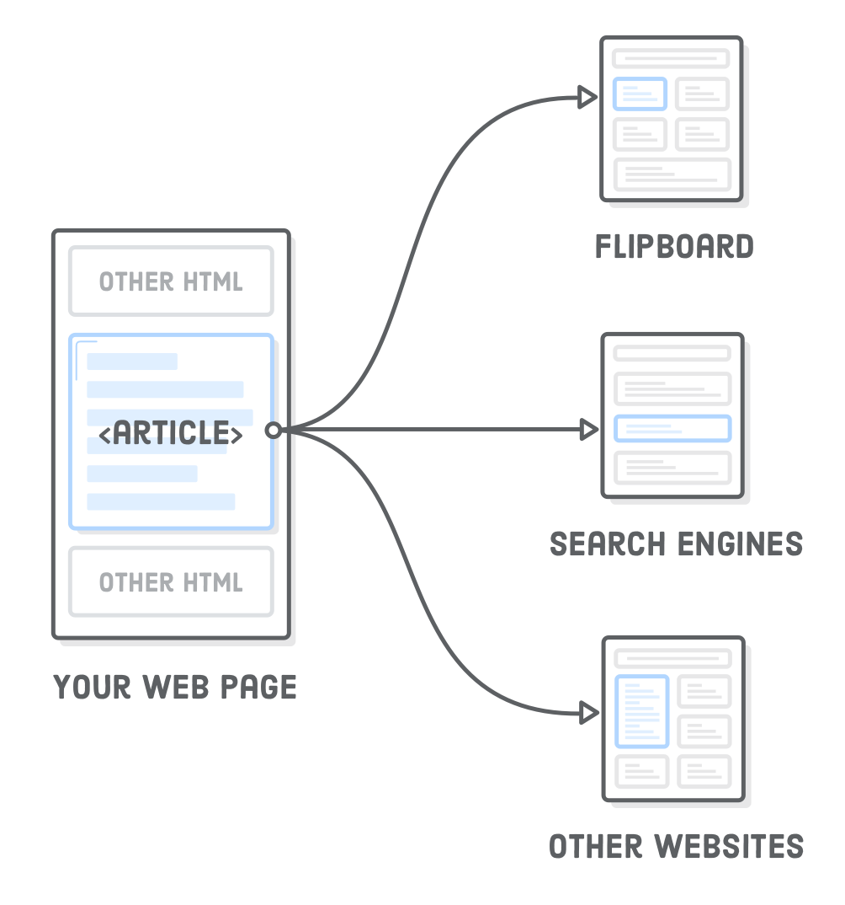
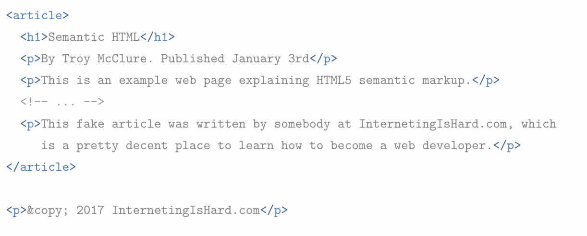

Semantic html
Semantic HTML” refers to the idea that all your HTML markup should convey the underlying meaning of your content—not its appearance. We've already been writing semantic HTML, but there's a whole set of elements designed for the sole purpose of adding more meaning to the overall layout of a web page.
They're called “sectioning elements”, and they look something like this:

Setup
Our example for this chapter will be a simple unstyled HTML document. Create a new Atom project called semantic-html with a new file in it called article.html. Add the following:
That <h1> and <ul> are presumably the top-level banner for our website—not the main content of the web page. We've never had to make this distinction before, but that's what this whole chapter is about.
The document outline
Every HTML document has an “outline,” which is how search engines and screen readers view the hierarchy of the content on the page. The <h1> through <h6> heading elements all contribute to a page's document outline. Let's check it out by adding a dummy blog post to our article.html file:
The HTML5 Outliner is a convenient tool for inspecting the document outline of a page. Go ahead and paste the entirety of article.html into the text field at the bottom. You should see the outline for our example, which currently has the following structure. It's a little reminiscent of the research paper outlines you learned to make in elementary school.

Each <h1> element creates a new section in the document outline, and any less prominent headings that follow it are considered subsections under that top-level heading. E.g., the Semantic HTML section has two subsections in it: The Document Outline and Inline Semantic HTML. The same goes for <h2> and <h3> elements, and so on down to <h6>.
Articles
The <article> element represents an independent article in a web page. It should only wrap content that can be plucked out of your page and distributed in a completely different context. For instance, an app like Flipboard should be able to grab an <article> element from your site, display it in its own app, and have it make perfect sense to its readers.
In our example, we can use <article> to mark the main content of the page as a self-contained unit, like so:
Notice how we left the copyright notice outside the
Deeper into sections
Sections
The
Think of <section> as an explicit way to define the sections in a document outline. Why would we want this instead of letting the heading levels do it for us? Often times, you need a container to wrap a section for layout purposes, and it makes sense to use the more descriptive <section> element over a generic <div>.
Nav elements
The <nav> element lets you mark up the various navigation sections of your website. This goes for the main site navigation, links to related pages in a sidebar, tables of content, and pretty much any group of links. For example, we should stick our site-wide navigation menu in a <nav> element
This is a great piece of semantic information for search engines. It helps them quickly identify the structure of your entire website, making it easier to discover other pages. As we'll see in Asides, it's possible to include multiple <nav> elements on a single page if you have different sets of related links

Headers
The

Headers are only associated with the nearest sectioning element—typically a <body>, <section>, or <article> element. This means that you can use multiple <header> elements to add introductory content to different parts of a document. For instance, the title, author, and publication date of our <article> is a pretty good candidate for another <header>:
Without this <header>, search engines and screen readers wouldn’t know that first <p> was separate from the main content of the article. Like <section>, it also serves as a convenient CSS hook, since the title and author info for a blog post are often styled differently than the rest of the article. Again, think of <header> as a more semantic alternative to a <div> container.
Footers
Conceptually, footers are basically the same as headers, except they generally come at end of an article/website opposed to the beginning. Common use cases include things like copyright notices, footer navigation, and author bios at the end of blog posts.